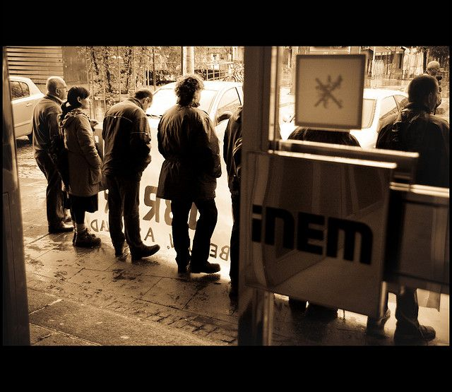

Quién no vota · Elecciones: 23 de julio de 2023
A igual renta, los barrios con más paro votan menos: el desempleo pesa más que el dinero en la abstención
En las 34.590 secciones censales de España, la participación del 23J sube con la renta: del 62,1 % en el 10 % de secciones más pobres al 77,4 % en el 10 % más rico. Pero cuando se comparan secciones con la misma renta, la que tiene más paro vota menos: en el quintil más pobre, del 69,2 % con poco paro al 59,1 % con mucho. Teniendo en cuenta a la vez renta, paro, estudios, edad y extranjeros, el paro es la variable que más resta.
Patrón: relación descriptiva, no causa

La pregunta: ¿Es la pobreza o el desempleo lo que más se asocia a no votar?
La renta importa…
DatoLos barrios ricos votan más que los pobres, y el 23J no fue una excepción. Ordenadas las 34.590 secciones censales de España por renta, la participación sube del 62,1 % en el 10 % más pobre al 77,4 % en el 10 % más rico.
PatrónPero la subida no es pareja. Buena parte de la diferencia se concentra en los extremos: del primer al segundo decil, la participación salta del 62,1 % al 67,5 %, y del noveno al décimo, del 73,4 % al 77,4 %. Entre medias, del segundo al octavo decil, apenas se mueve: del 67,5 % al 71,5 %.
…pero el paro importa más
DatoSi se ordenan las mismas secciones por paro, la pendiente es igual de clara en sentido contrario: del 76,5 % en el 10 % con menos paro al 61,0 % en el 10 % con más. El último escalón es el más brusco: del 67,0 % al 61,0 %.
DatoLa prueba decisiva es comparar barrios con la misma renta. Entre las secciones más pobres, las que tienen poco paro votaron un 69,2 %; las que tienen mucho, un 59,1 %. Son 10,1 puntos de diferencia sin que cambie el dinero.
PatrónEsa distancia se encoge a medida que sube la renta: 4,9 puntos en el segundo quintil, 3,6 en el tercero, 1,7 en el cuarto. El paro se asocia a mucha más abstención en los barrios pobres que en los acomodados.
PatrónUn modelo que tiene en cuenta a la vez renta, paro, estudios, edad, extranjeros y provincia lo confirma. Una sección con una desviación típica más de paro vota 4,0 puntos menos. La renta, sola, se asocia a 5,3 puntos por desviación típica; con las demás variables en el modelo, su peso cae a 1,0.
Cataluña: cuanto menos se vota, más pesa el paro
PatrónCon los datos de la Generalitat por sección se puede repetir el ejercicio en tres elecciones distintas. En las generales de 2023, cada desviación típica de paro resta 1,7 puntos; en las municipales de 2023, 3,3; en el Parlament de 2024, 3,1. En las elecciones con menos participación, el paro pesa casi el doble. La renta, una vez tenido en cuenta lo demás, casi no pesa en ninguna de las tres.
Lo que no sabemos
- HipótesisSi el desempleo causa la abstención. Es una correlación entre barrios (ecológica), no entre personas: no dice que los parados voten menos, sino que votan menos los barrios con más paro. La literatura académica sobre desempleo y participación es el contraste pendiente.
Los datos
| Quintil de renta | Poco paro | Paro medio | Mucho paro | Diferencia |
|---|---|---|---|---|
| 1 | 69,2 | 66,6 | 59,1 | 10,1 |
| 2 | 71,5 | 69,7 | 66,6 | 4,9 |
| 3 | 72,0 | 70,6 | 68,4 | 3,6 |
| 4 | 71,9 | 71,4 | 70,2 | 1,7 |
| 5 | 77,2 | 75,0 | 74,0 | 3,2 |
Preguntas
¿Votan menos los parados?
Estos datos no lo pueden decir: comparan barrios, no personas. Lo que muestran es que los barrios con más paro votan menos que otros con la misma renta.
Método y fuentes
- Qué se compara
- Las 34.590 secciones censales de España con datos de renta, paro, estudios, edad y extranjeros; participación del 23J sin voto CERA.
- Límites
- Paro y estudios son del censo de 2021; renta de 2023. Correlación ecológica: no permite hablar de individuos.
- Metodología completa
- Cómo se calculan los porcentajes, el modelo, los gemelos y los escaños
- Fuentes
- Ministerio del Interior, resultados electorales por mesa (Infoelectoral). Congreso 2004-2023 vía pollspaindata, commit ee5ecda; municipales 2007-2023 de los ficheros de Infoelectoral
- INE, Atlas de Distribución de Renta de los Hogares 2023 (renta, edad, población), vía ineAtlas.data
- INE, Censo de Población y Viviendas 2021 (estudios, paro, extranjeros)
- Generalitat de Catalunya, participación por sección censal (Transparència Catalunya, irrv-2mfc)
- Autoría
- Nacho
- Revisión de datos y texto
- Nacho, 2026-10-06
- Publicado · actualizado
- 2026-10-06 · 2026-10-07
- Correcciones
- Ninguna. Historial del Atlas